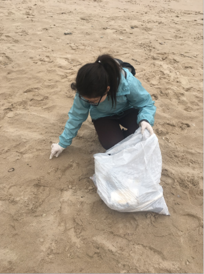
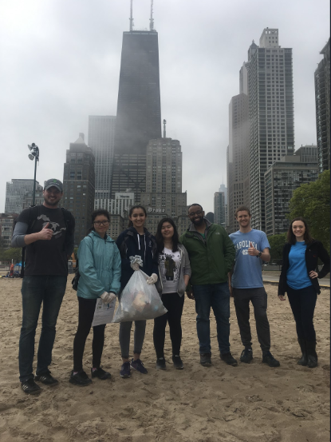

For two summers (2015/2016), I worked as a counselor at McKiernan Park Day Camp.
Although the camp allowed both boys and girls ages 5-12, I worked specifically with
little girls between the ages of 5-7.

I have volunteered to help clean up beaches of all the garbage that is thrown on them.
If we do not make an effort to clean our beaches, they may be ruined for future generations.


At St. James Church, we packed hundreds of bags of food for the homeless and needy. Without
places like shelters and churches with helping volunteers, many people would go without food.
In 2017, I travelled to China for a program that allowed Chinese kids who lived overseas to
travel to China and learn more of the language and culture.


During the summer of 2018, I participated in a summer immersion program that allowed me to learn computer
programming and coding. That's how I learned to make this website!
Also during the summer of 2018, I participated in a week long symphonic band camp. I play
the flute, and I loved the opportunity to learn more music through the amazing repertoire
they provided!